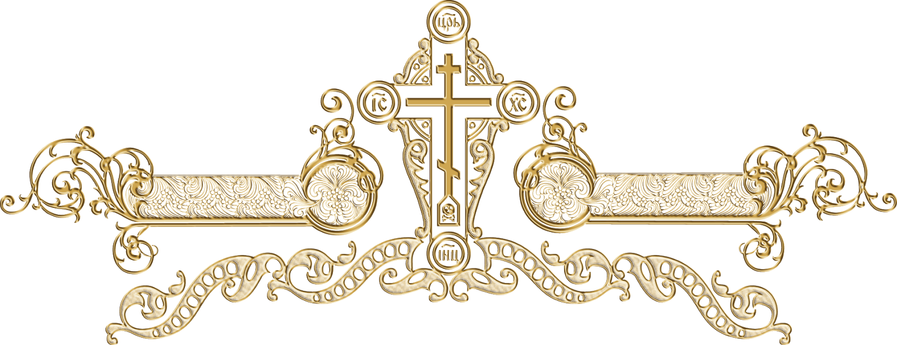

Скука одолела?
Не хандри, но испытай свою удаль и смекалку в мудрой игре сапёрской! Ступай осторожно, дабы не угодить в западню, и да откроется тебе путь к победе!
Завари себе чай крепкий, усаживайся удобнее и погружайся в сие занятие премудрое!
Воззри на образ Господень одесную и коснися его, дабы игру начати!

Топ 5 забавных случаев моей земной жизни
- В неведомом дерзновении, аки птица небесная, извёл сальто со второго этажа, к великому удивлению своего разума и тела.
- В окружении тварей земных, взят был я в плен сторожевой собакой, с которой довелось разделить тесноту окопа.
- Движением ноги неосмотрительным выбил окно подъездное, ибо случайное стечение обстоятельств привело к сему деянию.
- В заблуждении великом принял родинку за клеща зловредного, едва не подняв тревогу без меры.
- Уснул я, возлежав на матрасе, а воды морские, коварством своим известные, едва не увлекли меня в даль несказанную.

Богоугодный сапёр
Правила игры
Главное дело твоё — обрести и знаменем отметить места, где мины сокрыты. Победа будет твоя, ежели все мины обретены и помечены. Но оступись — и земля под тобой разверзнется!
Игра завершится, аще ты либо откроешь последнюю мину без ошибки, либо шагнёшь не туда и угодишь в западню. Запомни: сапёр вправе ошибиться лишь единожды!
Обзор на фильм Монах и бес (2016 от рождества Христова)
Сей образный сказ о монаше Иоанне, именуемый «Монах и бес», являет нам притчу о духовной брани, о
том, как воин Христов должен непрестанно бодрствовать и противу врага невидимаго восставати, верою и
смирением себе ограждая
Видим мы, како демон Легион, яко волк в овчей коже, хитростью своей тщится искусить брата Иоанна, в
сердце его тщеславие и злонравие посеяя. Но монах Иоанн не на плоть свою надеется, но яко истинный
раб Божий упование возлагает на волю Господню, молитву твердую и покаяние непрестанное
творя.
Бесовское искушение то — гордыня великая, яко змий лютый, душу точию пожирает. Но смирение и
кротость Иоанновы служат ему за меч духовный. Он не вступает в споры с диаволом, а молчанием и
терпением побеждает коварство его. Сия мудрость есть напоминание нам, како опасно гордыне внимати и
собственным силам уповати.
Фильм сей и духовен, и назидателен, и вкупе с тем исполнен мудрости простецкой, народной, с юмором
кротким, но душеполезным. Яко древний сказ, он показывает путь христианский — тесен и тернист, но
ведущий к Царствию Небесному.
«Монах и бес» есть благодатное напоминание о том, яко немощен человек без Бога, но с верою и
смирением врата ада не одолеют его.
Цитаты Иешуа Га-Ноцри из рукописи Мастер и Маргарита
(раба Божия Михаила Булгакова)
Несчастный человек жесток и черств. А все лишь из-за того, что добрые люди изуродовали его.
Правду говорить легко и приятно.
Злых людей нет на свете.
Бог один, в него я верю.
Я, игемон, говорил о том, что рухнет храм старой веры и создастся новый храм истины.
Расписание браний футбольных Английскаго первенства (Челси)
| Дата | Турнир | Соперник | Счет | Зрители | |
| 03.02.2025 | АПЛ | Вест Хэм | Дома | 2 : 1 | 39459 |
| 14.02.2025 | АПЛ | Брайтон | В гостях | превью | - |
| 22.02.2025 | АПЛ | Астон Вилла | В гостях | превью | - |
| 25.02.2025 | АПЛ | Стаутгемптон | Дома | превью | - |
| 09.03.2025 | АПЛ | Лестер | Дома | превью | - |
| 16.03.2025 | АПЛ | Арсенал | В гостях | превью | - |